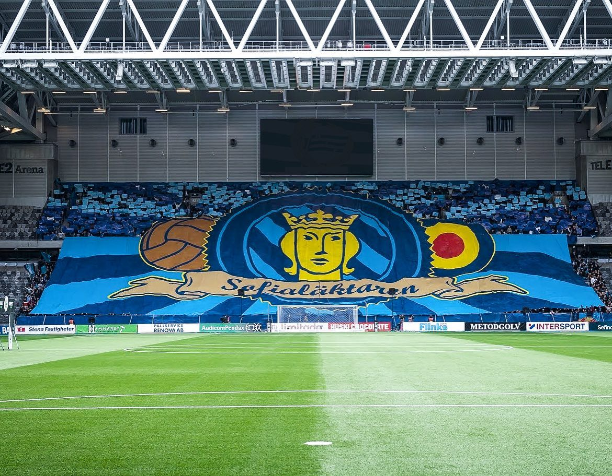

This website contains my top 3 tifos by Sofia Tifo
Factory Stockholm" was the former tifo group for Djurgårdens IF. It was established in 2005. However, prior to the move from Stockholm Stadion to Tele2 Arena in 2013, Factory Stockholm was disbanded and renamed to "Sofialäktaren Tifo." The group's aim is to create tifos during Djurgården's matches, which involve terrace choreography such as confetti, mosaic displays, OH flags, pyrotechnics, etc. Sofia Tifo raises funds for these arrangements through voluntary contributions from the wider Djurgården community. They are often seen with buckets collecting funds at Djurgården's matches, and more recently, they also collect funds through bank transfers and Swish.